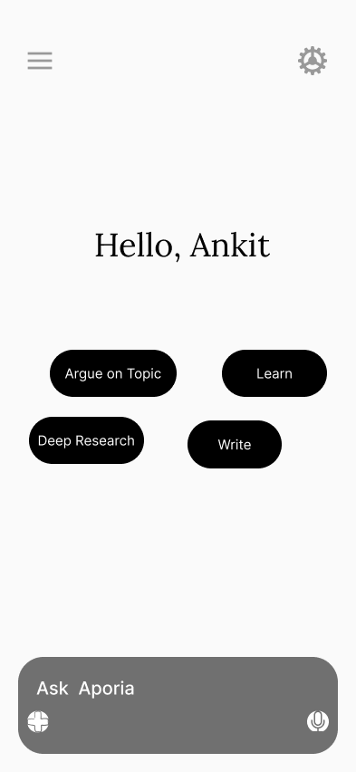

Aporia AI
Aporia is an AI system that prioritizes epistemic integrity over user agreement. Instead of confirming user beliefs, it introduces structured friction to expose logical gaps, fallacies, and unsupported conclusions.

02. Research & Ethics
Contemporary AI assistants are optimized for engagement and user satisfaction. This creates a structural problem: systems tend to agree with users even when their reasoning is internally inconsistent.
Through observation of online debates, classrooms, and technical discussions, I identified recurring patterns where logical errors were emotionally reinforced rather than corrected.
Epistemic Neutrality & Reactive Visual Feedback
Aporia is intentionally designed to remain visually and behaviorally neutral at rest. Before a user commits to an argument, the system provides no evaluative signals, warnings, or guidance. This neutrality establishes psychological safety and prevents premature judgment.
Evaluative feedback is introduced only after the user enters an argumentative mode. At this point, the interface becomes epistemically reactive: visual changes are triggered in response to the structure and quality of reasoning rather than the user’s identity or intent.
Background color shifts are used as a semantic layer to reflect the epistemic state of the argument. These shifts do not represent correctness or approval. Instead, they indicate the type of reasoning currently detected.
- Factual or empirical claims introduce cool, neutral tones.
- Logical gaps between premises and conclusions trigger muted amber signals.
- Recognized logical fallacies result in desaturated, non-alarming color shifts.
- Internal contradictions produce soft, low-opacity red washes.
Visual feedback begins locally at the level of argument components and expands only if reasoning persists. This layered approach ensures that the system challenges arguments without judging the user.
Neutrality is preserved at rest; feedback emerges only in response to committed reasoning.
State: Neutral Observer
The system is currently listening. No logical claims have been made.
Ethical Question: Is it more responsible for AI to comfort users—or to challenge them?
03. Feasibility
Aporia does not attempt to generate absolute truth. Instead, it evaluates whether conclusions logically follow from stated premises.
- No custom model training required
- Uses structured prompting around argument decomposition
- Logic checks operate as guardrails, not verdicts
This makes the system computationally feasible while remaining philosophically restrained.
04. Engineering Logic
User input is decomposed into:
- Premises (P) – stated assumptions or beliefs
- Conclusion (C) – the claim derived from them
The system searches for counterexamples, category mismatches, and invalid inference patterns before allowing progression.
05. Interface Design
Traditional chat interfaces hide reasoning structure. Aporia replaces chat bubbles with an argument tree.
- Nodes represent premises and conclusions
- Edges represent logical dependency
- Broken links are visually emphasized
Users cannot proceed until logical discontinuities are acknowledged.
06. Intentionality
Friction in Aporia is intentional, not accidental. The system slows users down at moments of reasoning collapse.
Importantly, the AI never says “you are wrong.” It only shows where reasoning fails to connect.
07. Failure Analysis
Early tests revealed a risk of intellectual intimidation. Users felt “judged” when logic was presented without context.
To address this, I introduced:
This conclusion is statistically probable but lacks primary source verification.
- Neutral language
- Optional depth controls
- Explicit uncertainty markers
08. Future Roadmap
- Multi-agent debate mode (Advocate vs Adversary)
- Argument acceptability scoring
- Educational deployment for classrooms
- AI auditing tools for misinformation
09. Live Prototype
A low-fidelity prototype was created to test argument visualization and friction gates.
View Prototype10. Reflection
This project challenged my assumption that good UX always minimizes effort. I learned that intellectual respect sometimes requires resistance.
Aporia is not designed to win arguments—but to make reasoning visible.